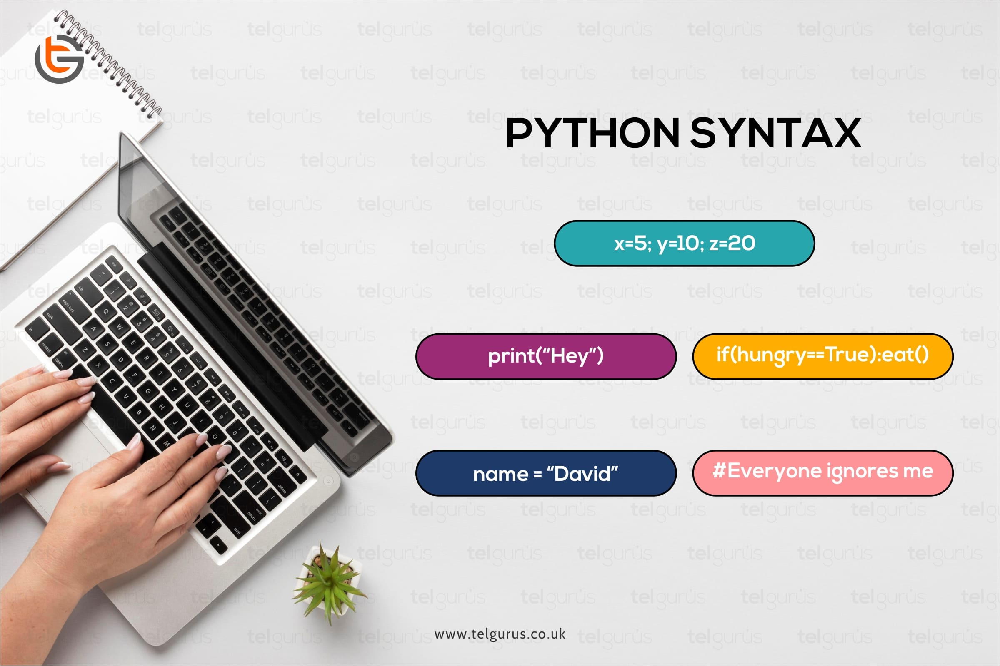
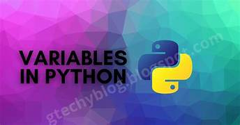

Learn Python basics to kickstart your programming journey.
Python Syntax Basics

Understand the basics of Python syntax, including indentation, comments, and the structure of a Python program. This is the foundation of writing clean and readable code.
1. Comments: Comments are used to explain code and make it easier to understand. Python uses the `#` symbol for single-line comments. For example: # This is a single-line comment print("Hello, World!") # This prints a message 2. Indentation: Python uses indentation to define blocks of code. Indentation is crucial because Python does not use braces `{}` like other languages. Typically, 4 spaces or a tab are used for indentation.
Watch this video on Python Syntax Basics
Declaring Variables

In Python, you don't need to declare the type of a variable explicitly. The type is inferred from the value assigned to the variable. For example:
number = 5 # An integer
pi = 3.14 # A floating-point number
name = "John" # A string
is_active = True # A boolean value
In the above example, Python automatically infers the type of each variable based on its value.
Watch this video on Python Syntax Basics
Core Data Types in Python
Python has several built-in data types that are commonly used in programming:
Integers (int): Whole numbers, e.g., 5, -23, 0
Floating-point numbers (float): Numbers with a decimal point, e.g., 3.14, -0.001
Strings (str): A sequence of characters, e.g., "Hello", "1234"
Booleans (bool): True or False values used for logical operations
Once you've declared variables, you can perform basic operations on them. For example, arithmetic operations, string concatenation, and boolean comparisons:
Arithmetic: +, -, *, /, %, **
String Concatenation: Using the + operator to join strings
Boolean Comparisons: Using comparison operators like ==, !=, >, <
Master the use of conditionals (`if`, `elif`, `else`) and loops (`for`, `while`) to control the flow of your programs effectively.
Python Conditions and If statements
Python supports the usual logical conditions from mathematics:
Equals: a == b
Not Equals: a != b
Less than: a < b
Less than or equal to: a <= b
Greater than: a > b
Greater than or equal to: a >= b
These conditions can be used in several ways, most commonly in "if statements" and loops.
An "if statement" is written by using the if keyword.
A for loop is used for iterating over a sequence (that is either a list, a tuple, a dictionary, a set, or a string).
This is less like the for keyword in other programming languages, and works more like an iterator method as found in other object-orientated programming languages.
With the for loop we can execute a set of statements, once for each item in a list, tuple, set etc.
With the while loop we can execute a set of statements as long as a condition is true.
Watch this video on Python Syntax Basics
Basic Programs
1. Write simple Python programs such as a calculator, a number guessing game, or basic data input/output applications to reinforce your learning.
2. Given two integer numbers, write a Python code to return their product only if the product is equal to or lower than 1000. Otherwise, return their sum.
3. Write a Python code to iterate the first 10 numbers, and in each iteration, print the sum of the current and previous number.
4.Write a Python code to display numbers from a list divisible by 5
Compile Your Code
Click the button below to test and compile your Python code online: